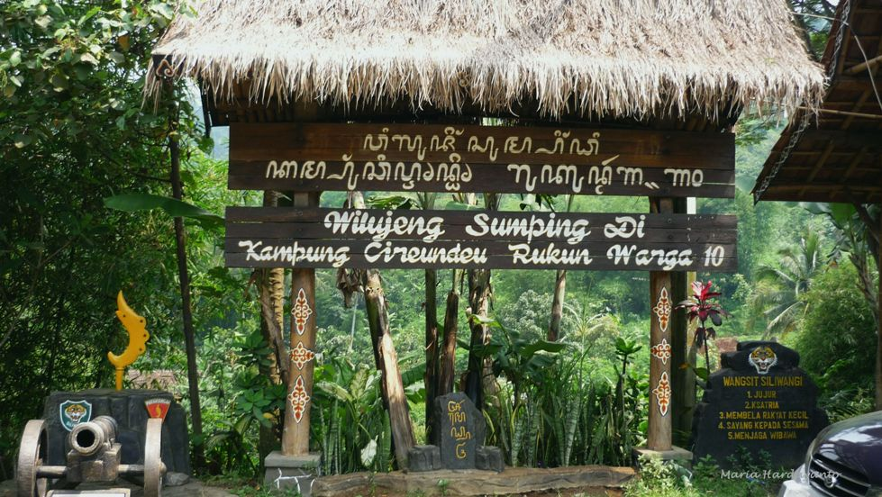
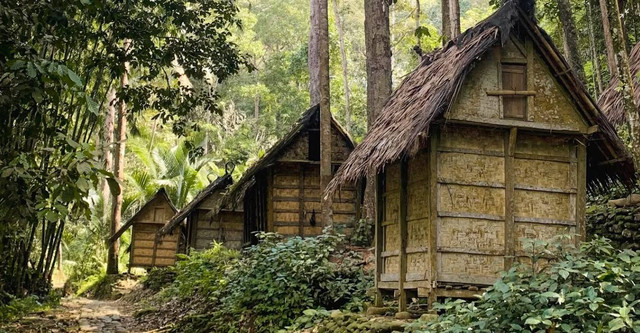
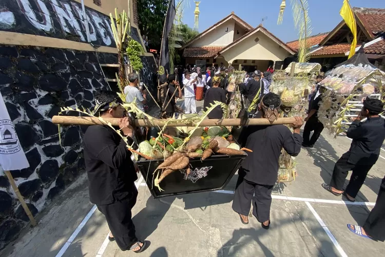

Sejarah

Kampung Adat Cireundeu mangrupikeun salah sahiji kampung adat di Kota Cimahi, Jawa Barat, anu kawentar ku kahirupan masarakatna anu masih ngajaga tradisi jeung kearifan lokalna. Kampung Adat Cireundeu teh geus aya ti abad ka-19,
nalika masarakat di dinya mimiti ngabentuk komunitas anu ngajaga adat istiadat Sunda. Salah sahiji ciri khasna nyaéta pola dahareunana anu henteu make béas salaku kadaharan pokok, tapi make singkong (sampeu). Kampung Adat
Cireundeu perenahna di Kota Cimahi, tepatna di Kecamatan Cimahi Utara, Jawa Barat. Struktur organisasi kampung ieu ngawengku tokoh-tokoh adat nu mibanda tugas ngajaga jeung ngalaksanakeun adat istiadat anu geus diturunkeun ti
karuhun.
Sosiologi

Di Kampung Adat Cireundeu, wangunan utama téh biasana mangrupa saung-saung tradisional anu digunakeun pikeun musyawarah atawa acara adat. Saung-saung ieu jadi tempat penting pikeun ngumpulna masarakat pikeun ngabahas hal-hal anu
patali jeung kahirupan kampung.
Jumlah bangunan di Kampung Adat Cireundeu teu pasti sabab terus aya pangwangunan atawa pangropéa. Sanajan kitu, kampung ieu masih ngajaga arsitektur tradisionalna, anu jadi ciri khas budaya Sunda.
Aya sababaraha aturan adat anu dijaga ku masarakat, saperti henteu make béas salaku kadaharan pokok, ngajaga leuweung sabagé sumber kahirupan, tur hormat ka alam. Aturan-aturan ieu jadi pedoman pikeun masarakat dina
ngalaksanakeun kahirupan sapopoe.
Kebudayaan

Kampung Adat Cireundeu mangrupikeun salah sahiji kampung adat di Indonesia anu masih ngajaga tradisi sareng budaya Sunda. Di kampung ieu, aya sababaraha upacara adat anu dilaksanakeun, di antarana nyaéta Upacara Seren Taun, anu
dilaksanakeun pikeun mensyukuri hasil panén, sareng Upacara Mapag Dewasa, anu mangrupikeun upacara pikeun jalma anu asup ka tahap dewasa. Salian ti éta, aya ogé upacara adat séjénna nu patali jeung kahirupan masarakat adat.
Mayoritas warga Kampung Adat Cireundeu nganut kapercayaan Sunda Wiwitan, anu ngahormat ka karuhun sareng alam. Kapercayaan ieu masih kénéh dijaga ku masarakat di dieu, anu terus ngamalkeun tradisi-tradisi anu diwariskeun ku
karuhun.
Salah sahiji fakta unik ngeunaan Kampung Adat Cireundeu nyaéta masarakat di dieu henteu make béas salaku kadaharan pokok, tapi make sampeu (singkong). Sanajan ayana di tengah urbanisasi, Kampung Adat Cireundeu tetep ngajaga
tradisi jeung gaya hirupna anu leubeut ku unsur budaya Sunda.